Missione Pietrarubbia
-
An interactive narrative experience about Arnaldo Pomodoro's life and opus.
Visual design
UX/UI
Illustration
A collaborative video game for teams of middle school students,
Missione Pietrarubbia was designed to be the
main experience for the SmART Schooling project by the
Arnaldo Pomodoro Foundation.
The students explore three fictional, psychedelic, sci-fi worlds
inspired by the works and the life of Italian sculptor Arnaldo Pomodoro,
trying to unlock and collect objects that come from the personal archive of the artist.
The project was featured on Artribune
I was in charge of the design of the levels (both experiential and visual), and the UX/UI design for the game interface.
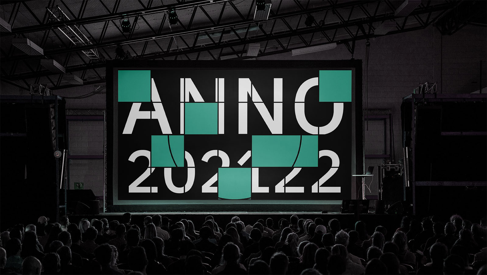
Missione Pietrarubbia was designed to be played collaboratively by a group of 30-40 people, and is often projected on a big screen.
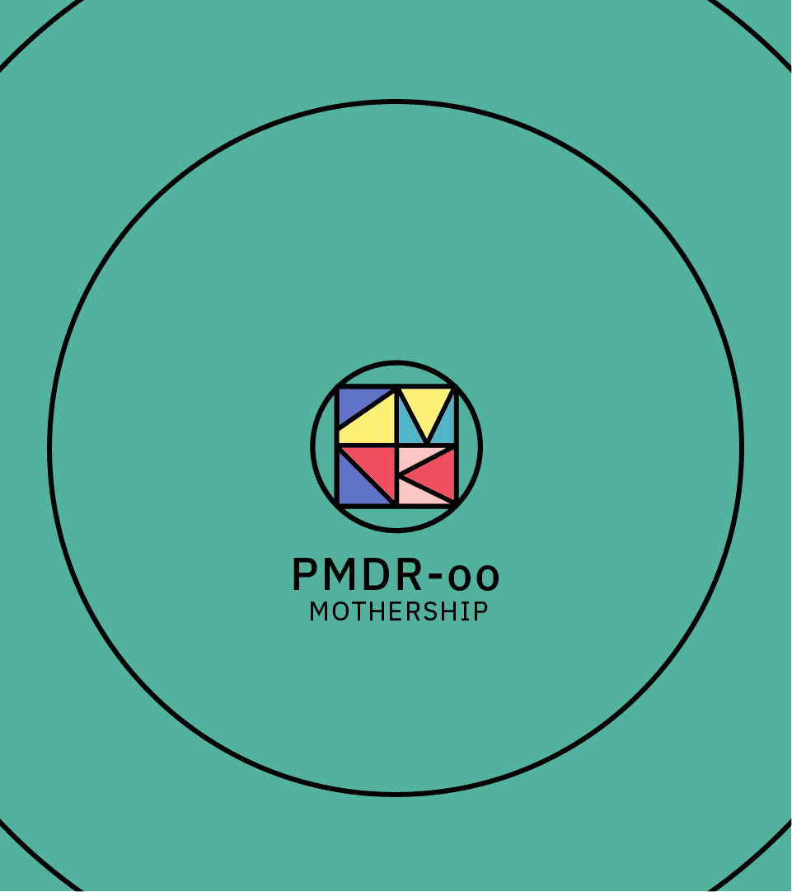
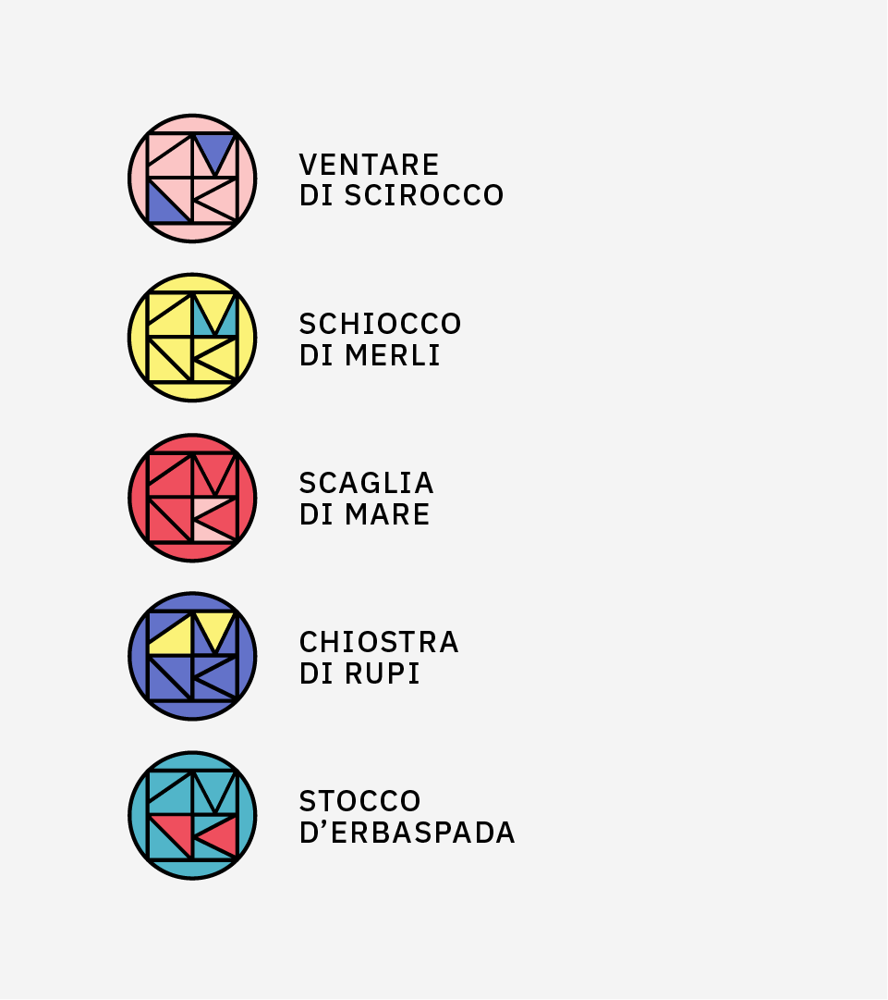
Players are divided into five crews, all part of a main ship called PMDR-00. Their respective logos and colours are a reflection of this.
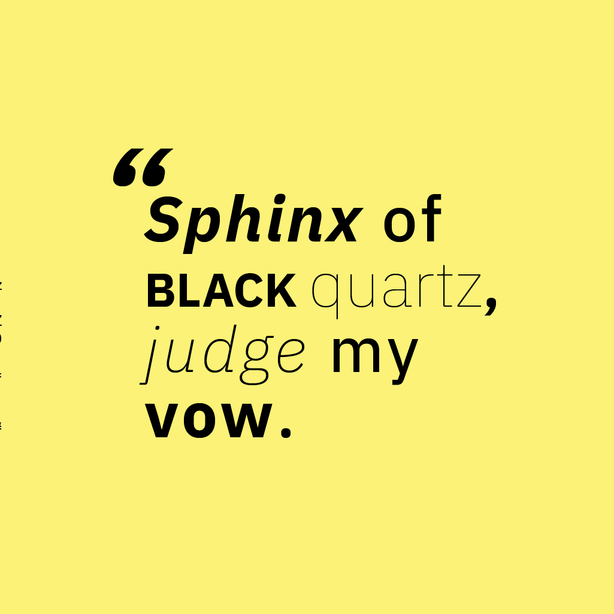
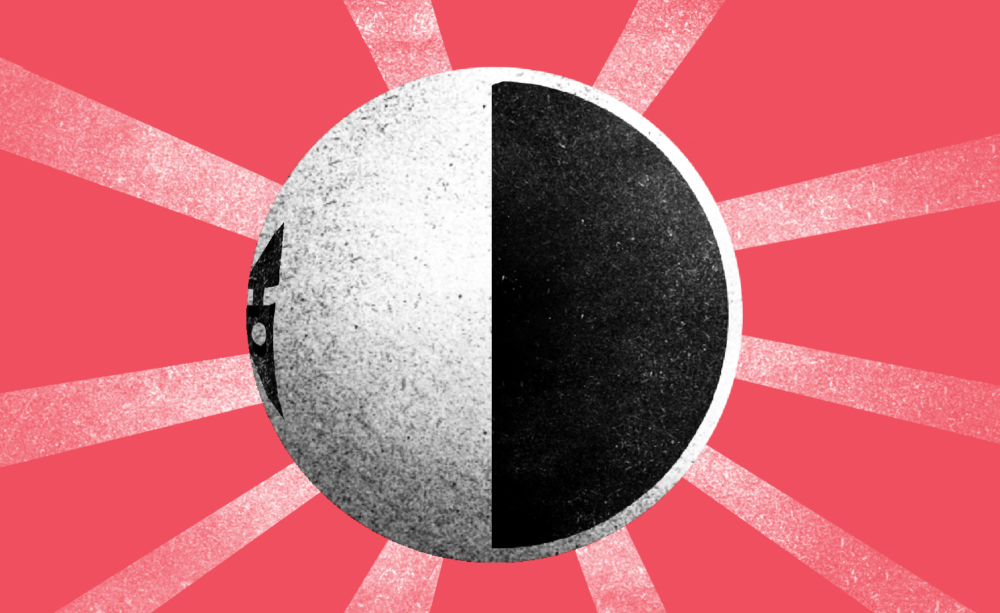
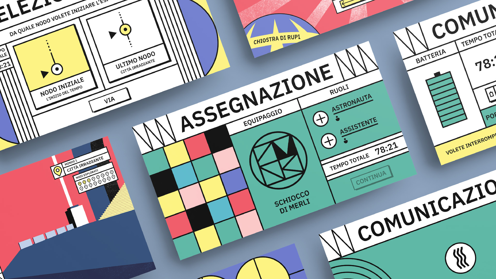
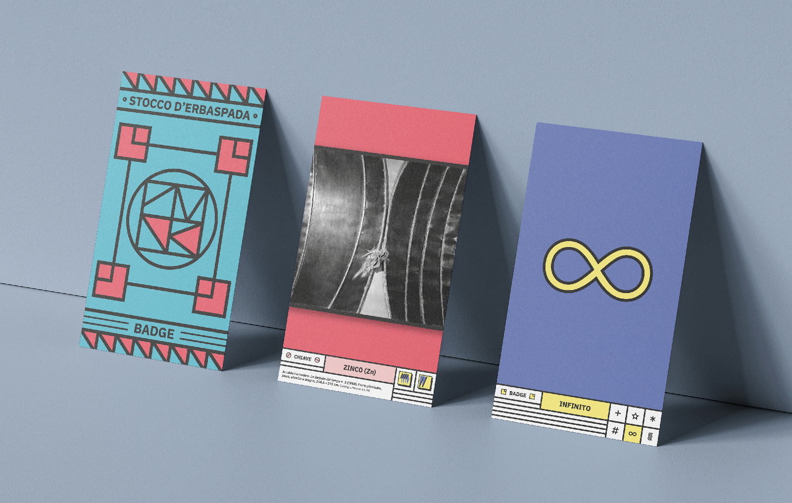
Pomodoro's artwork and the material from his archive became part of the printed cards that players use to solve the puzzles.
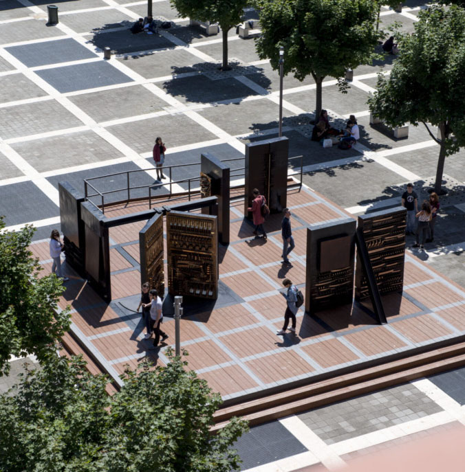
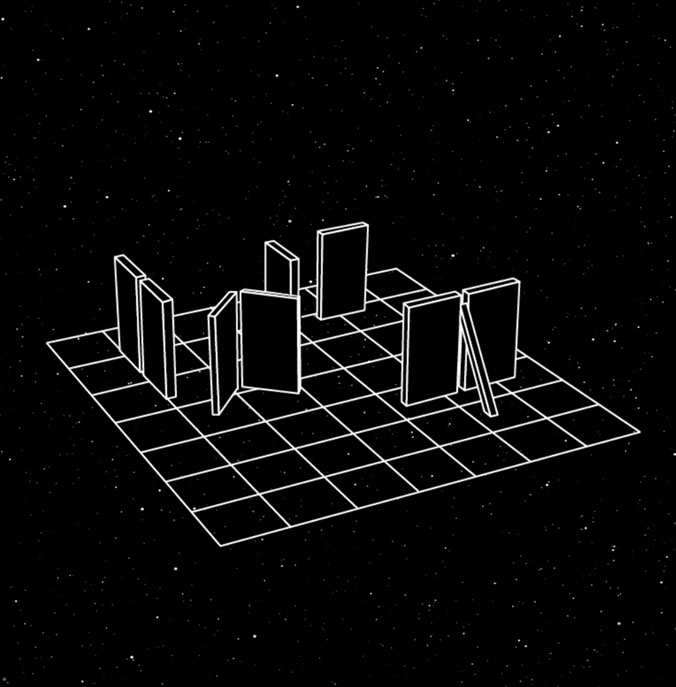
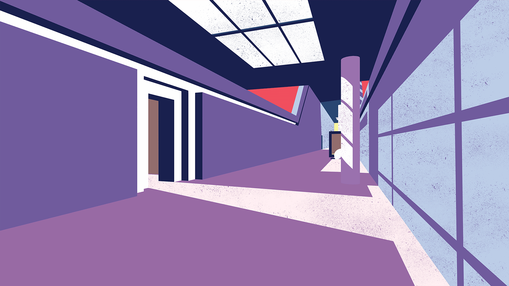
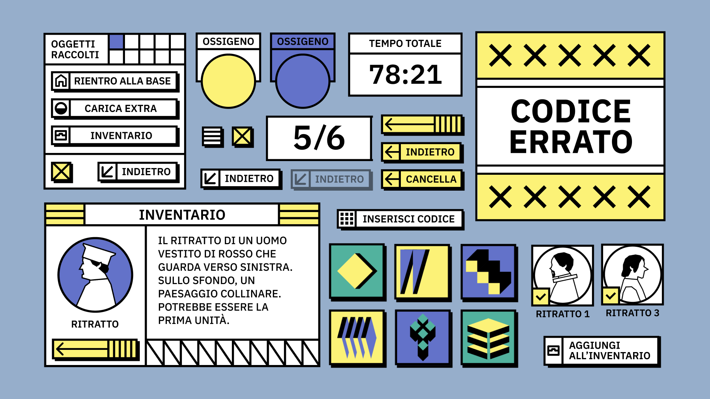
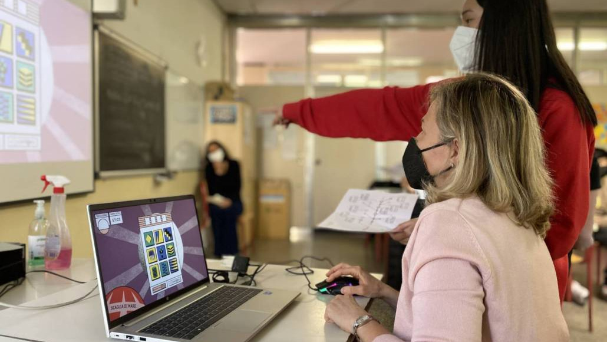